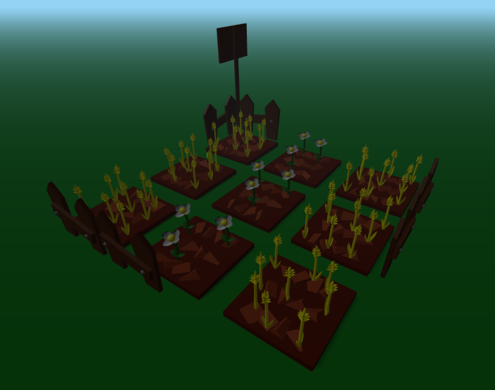
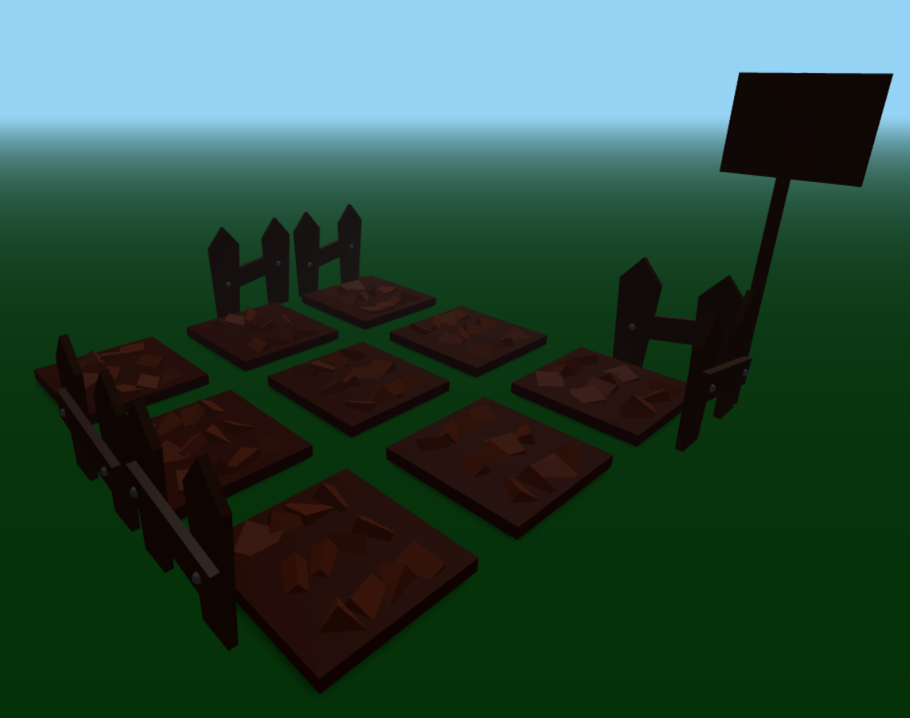

Descrizione
Progetto sviluppato per il modulo 2 del corso di Fondamenti di Computer Graphics del CdL Magistrale in Ingegneria Informatica. Il progetto è stato sviluppato in javascript (utilizzando la libreria javascript 3D THREE.js) e in HTML.
I modelli 3D sono stati realizzati in Blender5.1
Il progetto mette a disposizione dell'utente un piccolo giardino, composto da 9 appezzamenti di terreno in cui poter far crescere delle piante. L'utente tramite GUI potrà decidere se piantare dei fiori, piantare del grano oppure tagliare le piante in uno spazio selezionato tramite click del mouse.
Sempre tramite mouse l'utente potrà anche modificare la visuale che ha sul giardino.


File del progetto
Il progetto è stato suddiviso in più file e strutturato in moduli in modo da mantenere il codice organizzato, leggibile e meglio documentato.
main.js
Il file main.js si occupa del setup della scena tramite THREE.js. Questo setup include la creazione della scena (a cui verranno aggiunti tutti gli elementi da renderizzare), camera, controlli, luci, etc...
Una volta eseguito tutto il setup viene infine chiamata la funzione animate per effettuare il rendering della scena.
Garden.js
Il file Garden.js si occupa della gestione dei singoli giardini.
Come prima cosa il costruttore oltre a definire delle variabili interne, usate per controllare lo stato del giardino, definisce un THREE.Group in cui sono raggruppate tutte le mesh che compongono la "base" del giardino.
La base, più nello specifico, è composta da un blocco centrale e 12 blocchi più piccoli generati dalla funzione buildGarden in modo da dare l'idea che il giardino sia stato arato.
Il metodo plant gestisce la creazione delle piante da aggiungere al giardino, creando un THREE.Group "crop" in cui, in base al parametro "planting" passato, saranno aggiunti i fiori o il grano da renderizzare.
Il caricamento dei modelli viene fatto con due funzioni interne addWheat e addFlower che impostano alle mesh caricate tutti i valori richiesti perchè siano renderizzate correttamente. Nello specifico addFlower è divisa in due "load" distinte, in quanto i fiori sono composti da due modelli distinti (uno per la parte inferiore e uno per la parte superiore).
Il metodo cut rimuove semplicemente le le piante presenti nel giardino dalla scena.
Il metodo grow invece gestisce le modifiche da applicare ai modelli per dare l'impressione che le piante stiano crescendo. Nel caso del grano dopo aver mosso il modello fuori dal terreno gli viene gradualmente cambiato il colore (simulandone la maturazione) e la shrinkwrap del modello (simulandone la crescita).
Nel caso dei fiori, dopo aver mosso il modello fuori dal terreno, nel caso della parte bassa viene modificata la shrinkwrap (simulando l'apertura delle foglie) mentre per la parte superiore il modello viene scalato.
La funzione setupDecorations serve invece a caricare e ad aggiungere alla scena alcuni modelli per decorare il giardino.
UserControls.js
Il file UserControls contiene le funzioni che gestiscono l'interazione con l'utente.
In questo caso è stata necessaria una sola funzione raycasterSelect che su click dell'utente, tramite il raycaster, recupera il giardino selezionato e, in base all'azione attiva in GUI, chiama la funzione rischiesta.